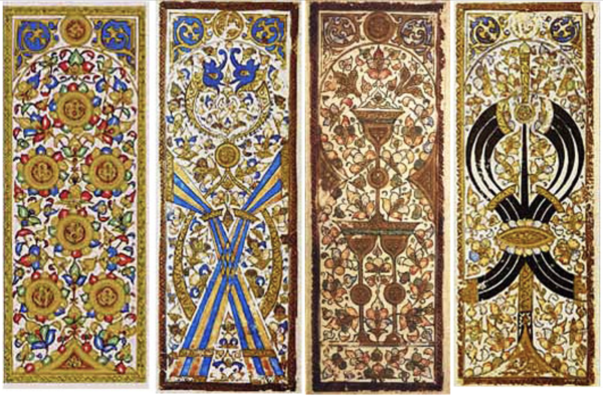
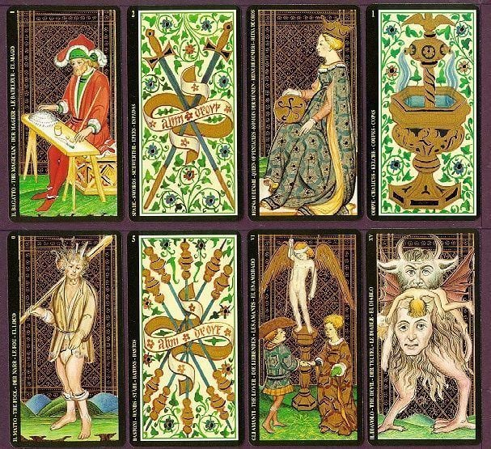
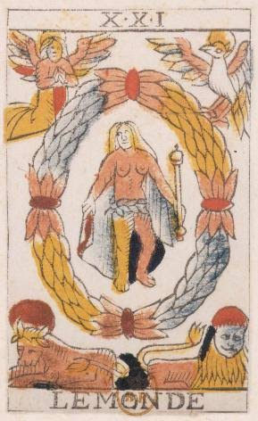
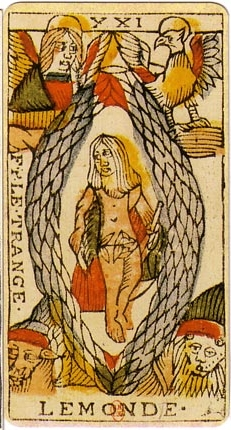
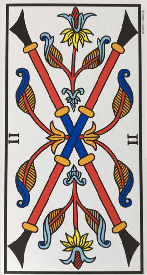
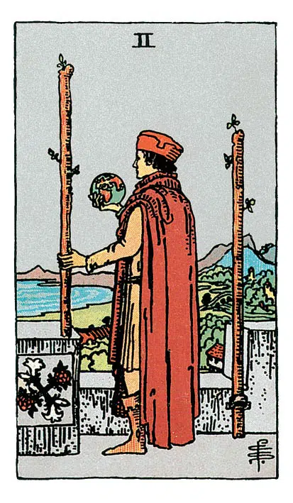

L'Histoire du Tarot
1. Avant le Tarot : L'origine des cartes à jouer
Avant que le Tarot n'existe, les cartes à jouer arrivent en Europe à la fin du XIVᵉ siècle. Inspirées des jeux asiatiques (Chine, Corée) et importées du Sultanat mamelouk d'Égypte, elles comportaient déjà quatre suites structurées (Coupes, Deniers, Épées, Bâtons).
Focus : Le voyage fascinant des cartes à jouer
Origines asiatiques & mameloukes : Vers le XIIIᵉ siècle en Chine (zhi pai), puis en Corée (t'u-con), les cartes s'inspirent des dominos et des monnaies. Au XIVᵉ siècle, les Mamelouks créent 4 couleurs géométriques avec des titres comme Malik (roi) et Nā'ib (vice-roi), origine du mot naïf / naipe.
Arrivée en Europe & essor populaire : Diffusées au XIVᵉ siècle par les routes méditerranéennes, les cartes bénéficient de la gravure sur bois (xylographie) à Lyon et Nantes. En 1858, Baptiste-Paul Grimaud inventera les coins arrondis pour éviter qu'elles ne s'effritent.
Un vecteur politique : En 1793, la Révolution française bannit les figures royales : les Rois deviennent des Génies, les Dames des Libertés et les Valets des Égalités !
Les traditions d'enseignes :
| Région | Couleurs / Symboles |
|---|---|
| France | ♥ Cœur, ♦ Carreau, ♣ Trèfle, ♠ Pique |
| Allemagne | Cœur, Grelot, Gland, Feuille |
| Espagne / Italie | Coupe, Or / Denier, Bâton, Épée |
| Suisse | Rose, Grelot, Gland, Bouclier |

Ces cartes rencontrent un succès immédiat dans les cours européennes et se diffusent rapidement grâce aux méthodes de gravure sur bois artisanales.
2. La naissance des "Triomphes" en Italie
C'est au milieu du XVe siècle, dans les cours princières du nord de l'Italie (Milan, Ferrare, Bologne), qu'apparaît l'innovation majeure : l'ajout d'une cinquième suite de cartes illustrées d'atouts, appelées alors Trionfi (Triomphes).

Destinés à une élite aristocratique, ces jeux sont peints à la main et rehaussés à la feuille d'or, célébrant la mythologie, la philosophie chrétienne et les vertus de l'époque.
3. Du jeu de cour au "Tarot de Marseille"
En traversant les Alpes lors des guerres d'Italie, le Tarot gagne la France et la Suisse. Il se démocratise grâce à l'imprimerie et à la xylographie. Les maîtres cartiers fixent un standard iconographique universel qui prendra plus tard le nom de "Tarot de Marseille".


Les lignes gravées simples et la mise en couleur au pochoir permettent une production à grande échelle, faisant du Tarot un jeu populaire pratiqué dans toutes les tavernes d'Europe.
4. La bascule : Quand le Tarot devient "occulte"
À la fin du XVIIIe siècle, le Tarot quitte le domaine du simple jeu de cartes pour devenir un objet d'étude ésotérique. Des érudits français redéfinissent complètement sa perception.

Plus tard, Éliphas Lévi et d'autres occultistes associeront formellement les 22 atouts du Tarot aux 22 lettres de l'alphabet hébreu et aux sentiers de la Kabbale, ancrant définitivement la dimension mystique du Tarot.
5. Les deux maîtres du Tarot moderne : Arthur & Pamela
En 1909, une révolution silencieuse s'opère à Londres. Arthur Edward Waite, occultiste et membre de l'Ordre de la Golden Dawn, conçoit une réinterprétation complète du jeu.


Arthur Edward Waite et Pamela Colman Smith (Pixie), les deux esprits derrière l'édition légendaire de 1909.
Il confie l'illustration à l'artiste scénographe Pamela Colman Smith. Ensemble, ils illustrent pour la toute première fois l'intégralité des cartes mineures avec des scènes narratives riches en symboles intuitionnels.
6. Le match : Tarot de Marseille VS Rider-Waite-Smith
Aujourd'hui, deux grandes traditions dominent la pratique du Tarot à travers le monde. La différence majeure réside dans le traitement des cartes mineures (ou numérales).
Tarot de Marseille
Le 2 de Bâton

Rider-Waite-Smith
Le 2 de Bâton

Comparaison du 2 de Bâton : géométrie abstraite (Marseille) vs illustration narrative (Rider-Waite-Smith).
7. Tarot VS Oracle : Quelle différence ?
Bien qu'utilisés à des fins similaires, le Tarot et l'Oracle obéissent à des règles de conception très distinctes :
| Critère | Tarot | Oracle |
|---|---|---|
| Structure | Fixe (78 cartes obligatoires) | Libre (de 20 à 90+ cartes) |
| Système | 22 Arcanes Majeurs + 56 Arcanes Mineurs | Créé sur-mesure par l'auteur |